Enquête Maths 3 2018 (C1223)
By Sébastien Boisgérault, Jean-Emmanuel Deschaud, Mines ParisTech
29 janvier 2017
Contents
Synthèse
Nombre de participants à l’enquête 2018: 73/115
Résultats des enquêtes 2016 et 2017: http://eul.ink/complex-analysis/
Les indicateurs “macros” (satisfaction globale, adaptation au cursus, intérêt/utilité du cours) sont excellents, comparables à 2017.
Le cours est très bien perçu; les prestations des trois intervenants sont toutes très bien évaluées (3.50, 3.69 et 3.67/4.00). Concernant le format du cours, le cours en amphi à Paris est jugé moins adapté que celui des Arcs (3.00 contre 3.40), lui-même moins bien perçu que le tutorat (3.92). Cela suggère la possibilité d’étendre la formule du tutorat, sous réserve que sur la base des très bon retours de 2017 et 2018 plus de volontaires se manifestent.
Les PCs sont légèrement moins appréciées qu’en 2017 – tout en restant très bonnes. Les insatisfactions se concentrent dans un unique groupe de PC; cette situation a bien été prise en compte.
Les ateliers et/ou séances de révisions sont un peu moins appréciées qu’en 2017, mais la situation est contrastée: l’appréciation des ateliers dédiés aux applications est similaire, ce sont les révisions qui ont été moins bien perçues et dont les modalités seront ajustées.
A la question “Pensez-vous que l’usage de l’anglais soit une bonne idée?”, la réponse moyenne n’est pas un oui franc et massif, mais un “plutôt oui” avec de vrais disparités, une situation similaire à 20171. Nous (S.B., J.-E.D.) comprenons que l’usage de l’anglais – ou le mélange entre cours et TDs en français, poly en anglais et examen disponible au choix dans les deux langues – puisse être inconfortable pour une partie des étudiants, mais nous pensons également que cela correspond à la réalité d’une pratique professionelle à laquelle il faut prépaper les étudiants. A titre d’exemple, 100% des références utilisées dans les chapitres dédiés aux applications sont des sources en anglais; le plus souvent, il n’existe aucun équivalent en français2. Nous pensons que travailler sur un support en anglais – même si, ou plutôt surtout si c’est inconfortable – participe de l’acquisition de ce savoir-faire. Par contre, faut-il prévoir – en amont – une formation spécifique pour préparer à cet exercice ?
Les ressources numériques, comme en 2017, sont peu utilisées. De nombreux étudiants les découvrent à l’occasion de l’enquête. Parmi les éléments disponibles, ce sont les documents des années précédentes (en particulier les sujets d’examen corrigés) qui sont jugés les plus utiles.
Général
Votre satisfaction globale (formule Ski-Maths ou Maths 3 à Paris)
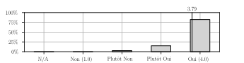
L’enseignement est adapté à votre niveau/formation en Mathématiques
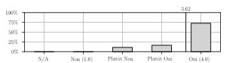
L’enseignement vous a semblé intéressant et/ou utile.
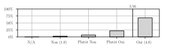
Le cours
Format
Le format du cours auquel vous avez participé (cours magistral ou tutorat) vous convient
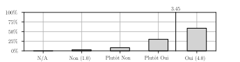
Qualités
Votre encadrant était dynamique/compétent/pédagogue/etc.
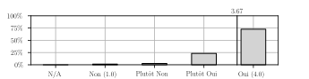
Le programme/contenu des cours est globalement bien conçu.
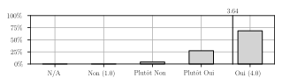
Sessions
Les sessions du cours qui vous ont posé problème (pas intéressantes, ou trop ambitieuses, pas claires, etc.):
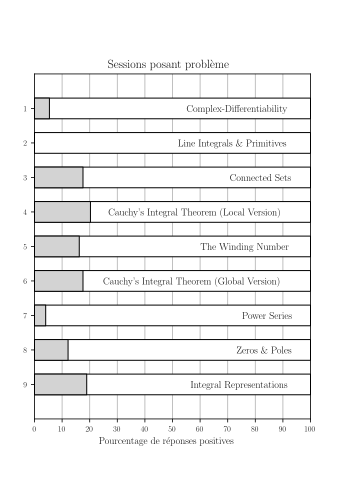
Les PCs (travaux dirigés)
Votre responsable de PC était dynamique/compétent/pédagogue/etc.
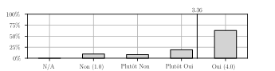
Les exercices sont adaptés / permettent d’assimiler le cours
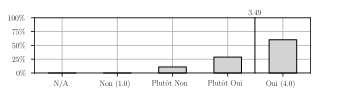
Ateliers (ou révisions)
Votre encadrant était dynamique/compétent/pédagogue/etc.
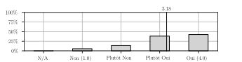
Le contenu de l’atelier (ou des révisions) était intéressant et/ou utile.
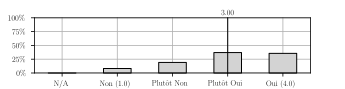
Ressources
Polycopié
Le polycopié (support des cours, PC et ateliers) vous a satisfait

Langue
Vous pensez que l’usage de l’anglais est une bonne idée
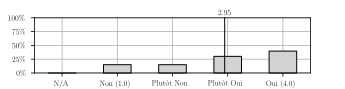
Autres
Les ressources utiles de http://eul.ink/complex-analysis/:
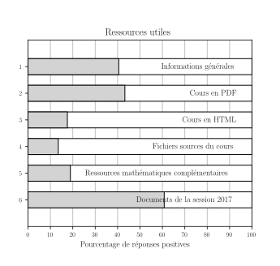
Annexes
Adéquation/intérêt/utilité de l’enseignement – commentaires
Cours intéressant et format adapté
J’ai déjà eu ce cours d’Analyse complexe à Dauphine en L3, mais je l’ai trouvé bien plus poussé et mieux présenté cette année. j’ai notamment découvert des nouvelles notions dans ce domaine, et approfondi beaucoup d’autres.
Merci beaucoup pour cet enseignement et pour cette semaine dans son intégralité. On se rend bien compte de la chance qui nous est ainsi offerte.
En ce qui concerne les cours, le découpage amphi/tutorat est une bonne idée, et permet à chacun de suivre les cours à son rythme.
Bref que du positif, merci encore
Le format 1h/chapitre est trop court pour bien maîtriser les notions. La définition de la connexité qui est donnée est très spécifique au cours : les caractérisations alternatives (qui sont les définitions usuelles) n’apparaissent nulle part dans le poly.
Ça allait un peu vite malgré le format 1hcours/1hpc qui était super. Pas du tout assez d’exemples en revanche !
Très intéressant, je ne suis pas apte à juger de l’utilité car je ne connais pas assez bien les applications
à mon avis, l’enseignement est assez théorique et pas assez appliqué
J’ai pris plaisir à suivre sérieusement un cours pour la première fois depuis un an et demi
C’était plus abordable que ce que je pensais et très intéressant interessant
Ce cours m’a globalement redonné envie de faire des maths !
Le cours de maths était génial, l’enseignant a de vraies capacités pédagogiques, ce qui pourrait sembler aller de soit pour un prof, mais qui jusqu’à présent dans les cours de maths des Mines n’était pas une évidence. La matière est intéressante, les chapitres s’enchaînent de manière cohérente. Le fait que le poly soit en anglais est plutôt drôle et formateur.
Cours équilibré entre théorie et applications concrètes
Intéressant mais pas suffisamment approfondi
J’ai un peu décroché sur les dernières séances lorsque les preuves des théorèmes se complexifiaient et me suis donc plutôt concentré sur les énoncés et résultats principaux.
Le prérequis est trop souvent celui des MP* des grands lycées parisiens. Pour une fois, venant de PC, le cours était adapté. Malheureusement les pales de l’an dernier semble encore une fois donner la part belle à du programme de maths de prépa pour MP
Difficultés du fait de certaines lacunes en topologie, notions de séries. Bonne compréhension du cours et de la résolution des exercices, mais je ne suis pas capable de résoudre les exercices seules.
Ski et Math, intéressant et fatiguant
Les cours d’amphi étaient très clairs
Le cours – commentaires
Certains cours ne méritent pas une séance (par exemple quand il n’y a que des defs ou autres comme le chapitre power series et zeros et poles)
C’était appréciable que ce soit écrit au tableau
Très bien, nuance sur le tableau qui était un peu petit pour ceux qui assistaient au cours après les 5 premiers rangs
Très bon cours, je regrette juste la salle de cours qui n’était pas du tout faite pour travailler avec poly ET prise de notes, sans table. Encore une fois, j’ai préféré ce cours à celui que j’avais suivi il y a deux ans en L3 à Dauphine
Dans certaines preuves, des points non évidents sont passés sous silence sans aucun commentaire(passage à la limite sous l’intégrale sans aucun commentaire concernant la convergence uniforme, majoration de l’angle dans la preuve concernant la constance locale du nombre de tours, distance strictement positive entre deux ensembles dans le chapitre sur la connexité…)
Super bien fait
trop focalisé sur les preuves et pas sur l’intuition et signification des concepts
Certaines sessions compliqués tombent le soir, moment où j’avais le plus de mal.
Je pense que le cours allait parfois un peu lentement, notamment sur les rappels de maths 1
J’ai pu suivre confortablement le début du cours car je l’avais appris pendant les vacances. A partir de mercredi j’ai été largué car j’avais à peine le temps de mémoriser les définitions si je voulais comprendre l’ensemble du chapitre. En fait je ne suis capable de restituer 80% d’un cours qu’à partir de la troisième lecture. La première lecture d’apprentissage me prend environ 2h. L’apprentissage est êce qui me concerne un processus de long terme, mais j’ai eu l’impression que mon prof de PC était partisan de la théorie de l’acquisition spontanée de connaissance.
Bien
J’ai eu trop peu de souvenir de maths 2 pour que le dernier chapitre soit utile. Pour les chapitre 4 et 6 les preuves sont trop longues pour les personnes qui n’ont pas d’affinités particulières avec la matière.
Le plus dur c’était la topologie, avec les vieilles preuves comme en prépa … j’avoue que j’ai un peu décroché à ce moment là, mais pour le reste, vraiment très intéressant et bien conçu même pour quelqu’un qui n’est pas un grand fan de maths, comme moi. De plus, le fait que le cours soit concentré sur une semaine était vraiment top pour pouvoir progresser et se rappeler d’une séance à l’autre du cours et de sa progression logique. Peut-être cela vaudrait-il le coup de passer un petit peu plus vite sur les notions basiques du début ou sur les preuves très complexes pour traiter quelques exemples concrets supplémentaires ?
Le cours était bien conçu , mais parfois on passait trop de temps sur des démonstrations et on ne pouvait pas finir le chapitre.
Les dessins et les explications visuelles étaient nombreuses cela aide beaucoup à la compréhension
Le chapitre sur les séries entière m’a paru long et fastidieux. J’ai eu l’impression de ne rien apprendre de vraiment nouveau dans ce chapitre (surtout des généralisation de concepts déjà connus). Je ne l’ai donc pas trouvé très intéressant.
Les démos étaient claires mais malheureusement certains théorèmes ont été traités rapidement à la fin du cours par faute de temps. C’est le seul point négatif que je peux trouver au cours.
Très intéressant, mais manque quelques rappels sur les notions vues en première année
C’est dommage de ne pas pouvoir préparer un minimum les TD
Le tutorat était tout à fait adapté pour moi (je préfère travailler de mon côté, à mon rythme, et je m’endors en amphi), il m’a permis de “survivre” à ce cours alors que j’ai une aversion assez prononcée pour l’analyse… L’encadrant était très attentif et comprenait que chacun aille à son rythme, en posant des questions si besoin. Les reprises des points importants de chaque section étaient très bien dosées également. Merci !
Le système du tutorat était vraiment bien, en plus de pouvoir prendre son temps pour comprendre les notions et prendre des notes, l’encadrant était là pour nous aider en cas de problème, et répondait à toutes nos questions, tout en synthétisant simplement les différentes parties du chapitre.
super bien, merci !!!
Le cours est vraiment bien construit, les notions arrivent progressivement et on a vraiment l’impression de construire les théorèmes les uns après les autres. La progression se fait à un rythme idéal
Mr Boisgérault était particulièrement intéressant et pédagogue, il a su nous faire cours en deux vitesses, mais je regrette que le programme d’analyse Complexe ne fût pas plus ambitieux et complet. Il faudrait plus d’heures (quitte à ne faire pas que des maths en skimath mais aussi une dizaine d’heures avant) et aller´ plus vite
Je ne suis normalement pas fan des maths (notamment maths 1 et 2 des Mines), mais ce cours de maths 3 m’a plu !
Très bien découpé (format un chapitre / une heure)
Très intéressant, ça fait du bien de refaire des Maths un peu comme prépa
Les PCs (travaux dirigés) – commentaires
Format adapté et encadré compétent
Bien !
Les rappels de cours au début de chaque PC sont toujours très utiles pour se remettre en tête tous les résultats que l’on va utiliser. Les PCs étaient toujours dynamiques et très bien menées !
Peut-être insister un peu plus sur les exercices compliqués, notamment lorsqu’il s’agit de trouver des chemins un peu complexes.
Elles sont très intéressantes, mais le format 1h ne permet pas de réfléchir à l’exercice, et nous(les élèves) passons donc à côté de beaucoup de subtilités de l’exercice (pourquoi telle hypothèse est nécessaire, où est-ce qu’elle sert vraiment…etc). De plus, il peut être intéressant de proposer des classements de difficulté des exercices, et des exercices permettant d’approfondir/des résultats intéressants sur le sujet du chapitre, en plus des exercices d’application plus ou moins directe du cours.
Pareil, un peu trop rapide, on n’a pas ‘e temps de comprendre et de réfléchir. Mais très bonne pc dans l’ ensemble, surtout les points de révisions et les questions aux élèves qui permettaient de rendre la pc dynamique
J’ai juste eu du mal à suivre l’exercice sur les fonctions anti-holomorphes qui est allé un peu vite pour moi mais sinon c’était parfait, PC très dynamiques et bien illustrées et un récapitulatif du cours très apprécié !
Très bien, les exos sont intéressants, bien choisis, on se croirait de nouveau avec les belles mathématiaques de prépa.
Je les ai subies à partir de mercredi. Je n’étais plus capable de proposer des pistes de réflexion puisque j’avais une idée vague des résultats à ma disposition. En plus j’étais fatigué et je somnolais en fin de cours. Il aurait peut-être fallu pouvoir préparer les exos avant la PC.
J’ai beaucoup apprécié les amphis. Par contre, c’est loin d’être le cas des PC. Entre le style de présentation qui ressemblait plus à un élève de prépa en colle s’adressant à un prof qui aurait déjà fait l’exercice, plutôt qu’un discours pédagogue, les erreurs de notations qui une fois corrigées rendaient le tableau illisible et une connaissance approximative du contenu du cours assumée, il ne reste plus grand chose de positif à dire.
A plusieurs reprises, un élève en question qui, comme le reste de la classe avait découvert le chapitre une heure avant, semblait plus à l’aise avec les notions du cours que le prof. Cela est d’autant plus décevant lorsqu’on peut comparer ce cours avec celui de Jean Auriol, par exemple, auquel l’attribution des adjectifs pédagogue, claire et utile seraient juste.
Très compétent et sympathique
Bravo Jean ! Tu fait saisir les incontournables du cours et l’esprit des exercices ! Bravo car les cours passent vite et on a presque envie de faire du temps supplémentaire ! (même avec le domaine skiable s’étendant à perte de vue par la fenêtre !)
Xavier est très gentil et il a mis du cœur à l’ouvrage pour essayer de mener convenablement ses PC, malheureusement il n’était pas au niveau. Manifestement mal à l’aise, il semblait stressé d’être devant nous, toujours à se raccrocher au corrigé, multipliant les erreurs et ne sachant pas bien expliquer pourquoi appliquer telle ou telle méthode. Certains élèves de la PC semblaient plus compétents que lui pour expliquer aux autres où nous allons dans l’exercice, quelles méthodes appliquer … Dommage après un cours d’aussi bonne qualité de se retrouver dans une PC moyenne (dont les élèves qui en ont eu l’occasion sont partis rapidement). Point positif : les rappels du cours écrit au tableau en début de PC.
Très bon responsable de PC, qui explique bien.
Parfois un peu rapide en fin de séance pour finir des exercices
Bien dans l’ensemble. Les rappels de cours en début de PC étaient une très bonne chose. Peut-être un peu plus insister sur la philosophie de la résolution des exercices : comment, face à un problème, décider de la stratégie à adopter. J’ai eu un peu l’impression que, à chaque fois, le prof nous donnait la stratégie à adopter, mais sans forcément expliquer pourquoi cette stratégie était la bonne. Mais, à part ce détail, résolution claire des exercices, enseignant compétant et pédagogue !
Les PC étaient difficiles à suivre, le professeur n’était pas pédagogue et semblait peiner à finir l’exercice…
très bien mais un peu court en temps pour prendre le temps de chercher
parfois un peu trop rapides
c’était super avec les rappels de cours au début
Bon… Comment expliquer? Je suis colleur en sup 3h par semaine, et franchement, je n’ai pas vu une grande différence entre le contenu de la PC et ce que fournissent mes élèves au tableau : discours hésitant, tout sauf clair, erreurs à répétition, désagréable impression que le chargé de TD découvre les exercices en même temps que nous. C’est drôle une journée, pas cinq.
La scène devient cocasse lorsque l’un des élèves doit venir terminer l’exo au tableau à la place du chargé de TD, complètement perdu (pour faire une identification partie réelle - partie imaginaire dans une égalité complexe, sans commentaire).
En bref, le chargé n’était pas méchant, motivé et sûrement très stressé (encore une fois, gros fou rire quand la personne qui doit vous expliquer de façon claire des notions nouvelles pour vous hésite, bafouille et écrit une absurdité sans nom avant de raturer la moitié du tableau, les colles m’avaient presque manqué.), mais il aurait dû travailler plus les exos en amont…
Les PC étaient très bien encadrées, la responsable savait expliquer clairement les différentes idées à utiliser pour résoudre les exercices, et on comprenait bien dans quels buts étaient utilisés quels théorèmes.
Un peu plus d’interactions avec les élèves auraient peut-être rendu la PC un peu plus dynamique
les PCs auraient mérité d’être plus détaillées
Dure à comprendre mais super prof de pc
Professeur extrêmement pédagogue. Ses rappels de cours sont vraiment efficaces et il sait insister sur les choses à retenir. Il explique bien et les PC étaient toujours très clair ! Merci Jean !
Les exercices de PC sont un peu trop faciles. D’un autre côté, s’ils étaient plus difficiles, ils ne serviraient plus à rien, étant donné que les PC juste après le cours ne permettent pas de les préparer.
Il me semble que les PC allaient trop doucement
Correction sans doute un peu rapide par moments.
C’est dommage de ne pas aller plus loin que le corrigé
Les exercices étaient très bien expliqués. J’ai retenu une grande partie des notions du cours en PC
Rarement aussi agréable de suivre une PC de maths ! Merci !
L’encadrant, Xavier, était assez stressé et donc allait trop rapidement, était brouillon et peu clair (nombreuses ratures et erreurs au tableau). Il donnait l’impression de vouloir montrer qu’il savait résoudre l’exercice en direct, plutôt que de nous enseigner et expliquer la résolution de l’exercice en elle-même.
Super j’ai l’impression d’avoir tout compris!
Très dynamique, et très bien pour les révisions de cours à chaque début et chaque fin (permet une meilleure assimilation)
Les PCs n’étaient pas claires du tout, le professeur avait beaucoup de mal à expliquer ce qu’il faisait c’était très brouillon
Ateliers (ou révisions) – commentaires
Pas de révision d’analyse complexe mais de l’analyse de prépa… Pas forcément l’objectif de ces révisions…
Le format n’était pas adapté : 3 groupes dans la même salle d’amphi, sur un exercice pas très représentatif du cours. Il vaudrait mieux faire 3 groupes différents (comme des pc) et effectuer les exercices avec le prof
Très, très bien, rien à redire !
le cours était intéressant, mais surtout sur le plan mathématique, on n’a pas forcément vu dans quelle mesure cela était utilisé dans le domaine de l’imagerie
Très intéressant. Malheureusement, nous n’avons pas pu avoir de démonstration sur la télévision à cause d’une incompatibilité entre l’ordinateur et la télévision.
Ce serait bien d’avoir les formats papiers pour les révisions…
Très utile, exposé qui a permis de résumer rapidement de longues pages du poly ce qui est très appréciable
C’est bien d’avoir des exemples pratiques comme ceux-là
Je m’attendais à quelque chose de plus concret
J’ai relu un cours de mon côté et refait un exo pendant l’atelier
Le partiel de l’examen reprenait peu de notions du cours
J’ai révisé les PC pour mieux les assimiler.
Bon atelier pour un petit groupe d’élèves intéressés par les méthodes numériques. Intéressant et bien mené. Pierre-Etienne est nettement plus à l’aise et pédagogue que Xavier, ça faisait du bien !
Je m’attendais à des applications “concrètes” exposées avant d’étudier les mathématiques associées. J’ai l’impression que c’était un chapitre de maths de plus sans application
C’etait Intéressant de réfléchir sur un problème par petits groupes, l’assimisation des propriétés et des théorèmes et plus dynamique.
Par contre, les premières questions du sujets (jusqu’a La 5 ) faisaient plus appel à l’analyse qu’à l’analyse complexe, alors que l’autre exercice avait l’air d’approfondir les intégrales sur des chemins.
Excellent ! L’introduction par GIMP était géniale et permettait de bien saisir le contexte. L’interactivité avec les élèves (demander de rappeler les théorèmes, de faire des démonstrations) aide à rester concentré et à réviser le reste du cours.
Un atelier très intéressant pour comprendre l’utilité du cours via une application qui est souvent utilisée
bien fait mais un peu trop intense pour une fin de semaine
salle bruyante
l’atelier était plus une introduction assez légère au sujet en question, ce qui correspondait parfaitement à la fatigue du dernier cours de la semaine
dommage qu’on ait pas vu plus de “pratique” algorithmique
Faire des annales en révisions sur des notions aussi fraîches ne me parait pas pertinent, j’ai donc choisi de réviser cours et PC “dans mon coin”
Atelier intéressant avec un encadrant dynamique qui explique bien les idées liées aux preuves.
Un très léger manque de formalisme se faisait parfois ressentir (par soucis de simplicité sans doute), mais ces abus de notations pouvaient porter à confusion pour des élèves non habitués à de telles notations, qui pourraient donc confondre les objets manipulés.
L’atelier de Poisson Image Editing était trop théorique
super!
J’aurai préféré que qu’on fasse la révision sous la forme de TD, où l’encadrant corrige les questions au fur et à mesure
Aperçu très intéressant de la méthode, encore une fois très bien mené par le professeur.
L’atelier “Poisson Image Editing” est étonnant car il est contextualisé par l’utilisation de GIMP, alors que ce programme n’utilise pas la théorie développée pendant l’atelier. L’exposé sur les fonctions harmoniques reste toutefois intéressant.
Je ne suis pas venu malheureusement
C’est bien de laisser la possibilité de faire une séance de révision à la fin de la semaine.
Le problème choisi ne faisait que très peu intervenir les notions du cours
Difficulté de résoudre les exercices de révision, et je n’ai pas forcément osé dire ce qui me posait problème auprès des tuteurs car cela aurait pris trop de temps.
Mélanger cet atelier avec la pratique info serait l’idéal : pourquoi pas le prolonger à Paris après en séance de TP ?
Le temps est limité et le contenu est pas riche
Les resssources associées au cours – commentaires
J’en prends connaissance aujourd’hui, je mets le lien dans mes favoris d’ici l’examen !
Le format est très proche de celui des articles scientifiques (références citées), mais il peut être intéressant de mettre plus en évidence une référence pouvant faire office de “suite de cours” (actuellement, ces ressources sont toutes mises sur pied d’égalité dans la section Free resources)
C’est la première fois que je vois ce lien, ça me sera utile à présent pour les révisions mais les dates de séjour ne me servent plus à rien^^
Tout est centralisé, c’est très appréciable
Je n’avais pas entendu parler du lien http://eul.ink/complex-analysis/
Je ne savais pas qu’il existait une telle plateforme numérique.
Le lien ne marche pas
On aurait bien aimé savoir que ces ressources existaient avant de partir en ski maths !
Je n’ai pas éprouvé le besoin jusqu’à maintenant de me rendre sur ce site.
existence inconnue jusqu’alors
je n’en connaissais pas l’existence avant ce questionnaire
L’utilisation de l’anglais aurait pu être intéressante si le cours avait été lui-même en anglais. L’anglais ici a juste été à l’origine de questions visant à traduire le vocabulaire en français.
Le poly est bien fait dans son contenu , mais je pense que l´usage’ de l’anglais est une très mauvaise idée. Les concepts sont assimilés en français, et la traduction de concept est très penible. Je pense que faire des maths en anglais est aussi problématique car pour l’immense majorité qui n’a pas fait de maths en anglais et qui n’est pas complètement bilingue, cela nuit à la mémorisation
RAS
Je ne savais pas qu’il y avait autant de ressources
La formule Ski-Maths (& divers) – commentaires
Probablement un des meilleurs cours de l’école, à ne pas changer
Merci.
Cette semaine aux Arcs était très réussie, merci beaucoup ! La formule 1h de cours/1h de PC (plutôt que des blocs de 2h de cours ou de PC par exemple) est une bonne idée car elle permet de ne pas s’endormir et d’appliquer immédiatement les notions vues.
Merci d’avoir organisé ce cours ! Il est de loin le cours de mathématiques le plus satisfaisant et le mieux enseigné depuis le début de la première année. Il peut être intéressant, vu le caractère très intense de l’enseignement, de proposer, dans le poly et les exercices, deux niveaux de lecture : ce qu’on voit en cours, et ce que l’on peut faire pour aller plus loin (dans les appendices, qui sont pour la majorité anecdotiques et restent très en surface pour l’instant). Cela pourrait intéresser ceux qui veulent aller un peu plus loin.
Merci les mines !
La formule 1h cours suivi de 1h de PC est super, les horaires sont parfaits et permettent de profiter à fond du ski et des maths, rien à redire
superbe propostion
Les salles étaient vraiment trop petites. Une fois que l’on est dans la moitié de la salle la plus éloignée du tableau, il est très difficile d’arriver à suivre le cours au tableau. Mis à part cela, le cours était très agréable et à un rythme adéquat.
Un cours qui allie magnifiquement divertissement avec le ski, et stimulation intellectuelle avec les maths. Ils ne sont pas trop lourds, intéressants et même ludiques. La transition vacances-reprise n’aurait pas pu être meilleure!
Le cadre mis à disposition par l’UCPA était excellent !
Essayer de trouver des tables
Merci beaucoup, c’était une super semaine!
Juste un détail concernant les responsables du ski maths parmi les élèves. On avait très peu d’informations et on les recevaient très tard. Cela pourrait être améliorer pour un meilleur déroulement de l’amont du ski maths
Merci
Bravo pour ce cours ! bravo et merci pour ce beau moment en promotion !
Cette semaine était magique, c’est le point culminant de la scolarité aux Mines. Merci encore à l’équipe enseignante organisatrice de ce cours.
2h + 2h permettent de bien se concentrer pendant les sessions de mathématiques. De plus le cours était intéressant (bien que je ne sois pas un grand fan des mathématiques).
Un grand merci pour toute cette organisation. Le concept du ski-maths m’a clairement convaincu. Jamais je n’aurais aussi bien suivi un cours de maths si il n’avait pas été concentré sur une semaine, et loin de Paris. Je pense d’ailleurs que c’est sans doute le cours scientifique que j’ai le mieux suivi depuis mon entrée aux Mines.
Par rapport aux VP ski maths, nous n’avons pas été beaucoup mis au courant. Je pense qu’à l’avenir, ce serait une bonne chose que le ski-maths soit directement géré par le Bureau des Sports (BDS).
un cadre idéal pour suivre un cours de maths avec plaisir. Merci !
c’est une réelle chance ! merci
Le ski-math est clairement une des formule à conserver, où tous les élèves peuvent partir ensemble et passer une super semaine, tout en suivant un cours de manière assidue.
Pour ma part je suis satisfait, j’ai appris à skier l’année dernière pour cette année et j’ai l’impression que la formation de ski des débutants était mal faite. Ils ont très peu de cours et leurs cours sont très court. J’ai l’impression que les premiers jours ils ont skié environs 3 à 4 heures sur 8 possibles donc l’apprentissage et mauvais et ensuite ils sont quasiment incapable de skier tout seul.
Formule excellente ! Il n’y a pas à dire, le grand air permet vraiment de mieux se concentrer. L’équilibre entre les 4 heures de cours par jour et le ski rythme bien les journées et c’est un plaisir de retrouver toute sa promotion dans un tel cadre. L’UCPA est un centre très convivial. Merci à tous les encadrants pour cette organisation et cette superbe semaine !
Je pense que le cours pourrait et devrait être plus ambitieux. Les professeurs sont bons, il suffit de rajouter un peu de profondeurs aux notions importantes en allant plus loin, et je suis convaincu que ca forcerait les élèves intéressés à plus travailler.
Le découpage des cours en 2*(1h amphi + 1h PC le matin et en fin d’aprem) est top et permet d’être bien concentré pendant ces 4h quotidiennes.
Merci pour votre investissement dans la réalisation de cette belle semaine !
Semaine à conserver absolument dans le cursus, car son format permet à la fois d’être plus concentré sur le cours de maths et de profiter d’une belle semaine à la montagne
Merci :)
J’aime vraiment les sciences, mais d’habitude je ne suis quasiment aucun cours aux Mines, par manque de temps, de motivation et de qualité de cours. Les cours de Maths de Mr. ROSIER notamment n’était pas des plus motivants.
Au ski-maths c’était vraiment plaisant d’avoir un cours intéressant, et un contrat implicite de confiance avec les élèves : ça m’a permis pour la première fois depuis 2 ans aux Mines de suivre à 100% un cours, et franchement ça fait du bien.
Il faudrait partir à la montagne pour chaque module de cours…
Merci !
Cette semaine au ski est vraiment une bonne idée. Très bon esprit de groupe. Motive à aller en maths et à bien comprendre le cours. Mis à part les pcs tout était parfait.